84 / 84
Automated tests passing
Current partner walkthrough · 14 September 2026
This guide records the current Domic Home Passport flow: protected access, property creation, editable AI-assisted review, draft recovery, deliberate confirmation and clear handling when a document cannot be used.
Automated tests passing
Production build check
Anonymous access blocked
Source repository
The product loop
AI proposes; the user decides. A failed reading never silently becomes a maintenance fact, and an incomplete review can be saved as a draft.
Step 0 · Protection
The host first checks the invited account. Domic then applies its own administrator code or property-scoped owner, contributor and buyer capabilities.
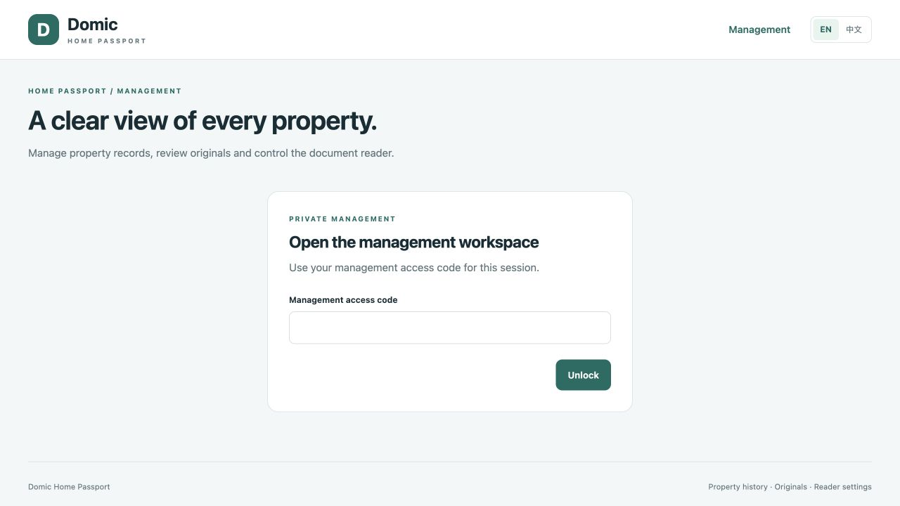
Step 1 · Property setup
Records belong to a property, not to a loose pile of user uploads. The administrator creates the home, assigns the first owner label and issues role-specific links.
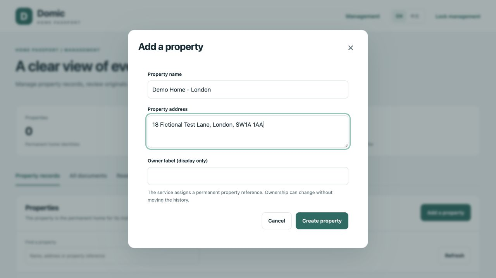
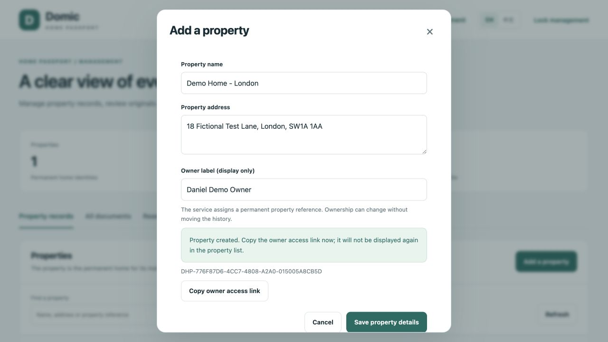
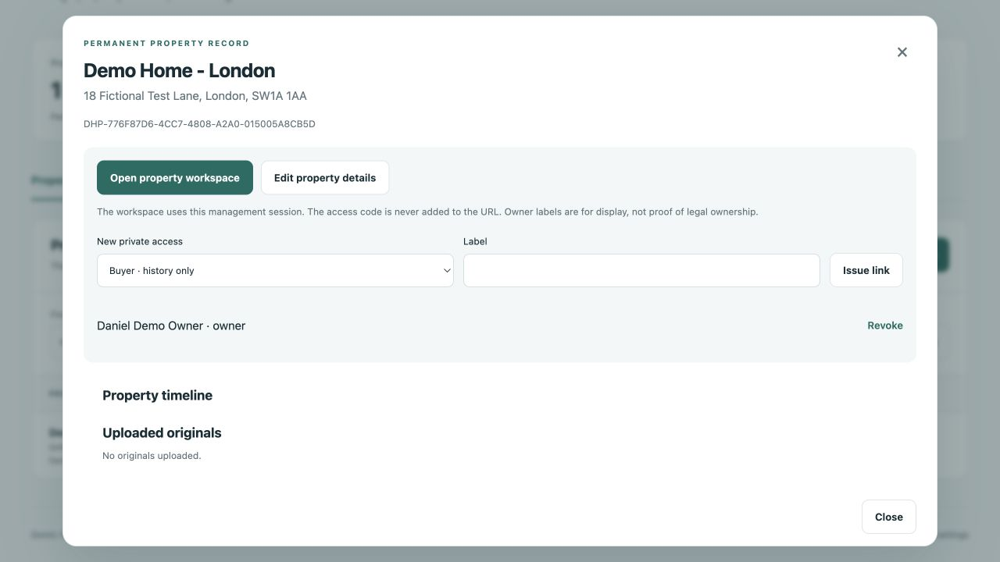
Steps 2–6 · Normal receipt flow
This path uses a synthetic UK PDF. The reader supplies a structured proposal, the user corrects it, saves a draft, reopens it and confirms a summary.
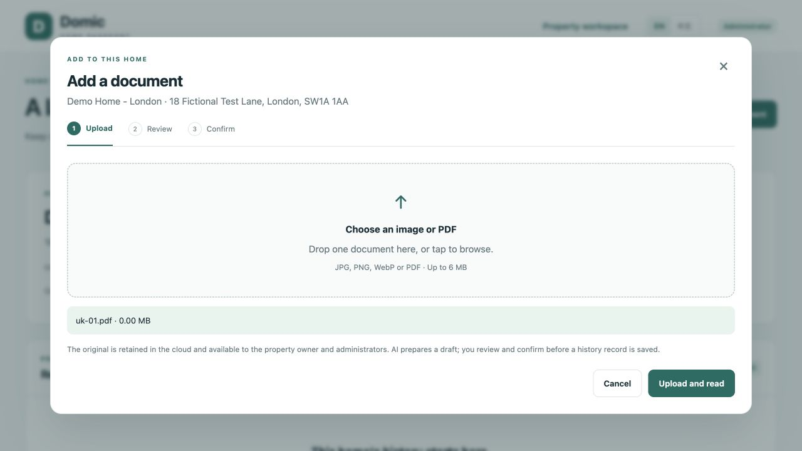
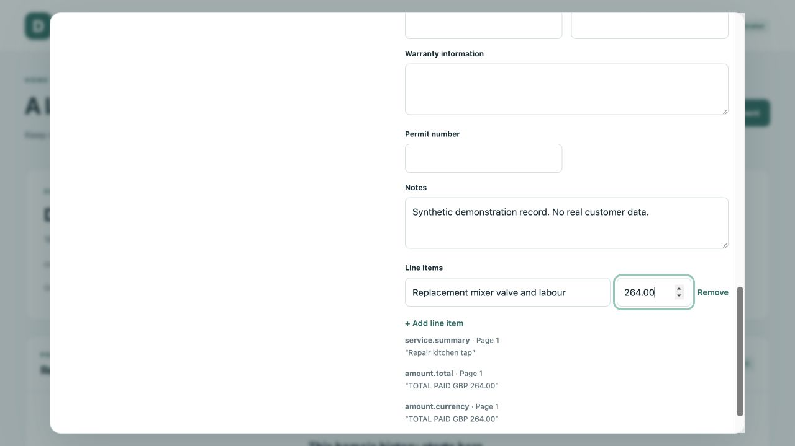
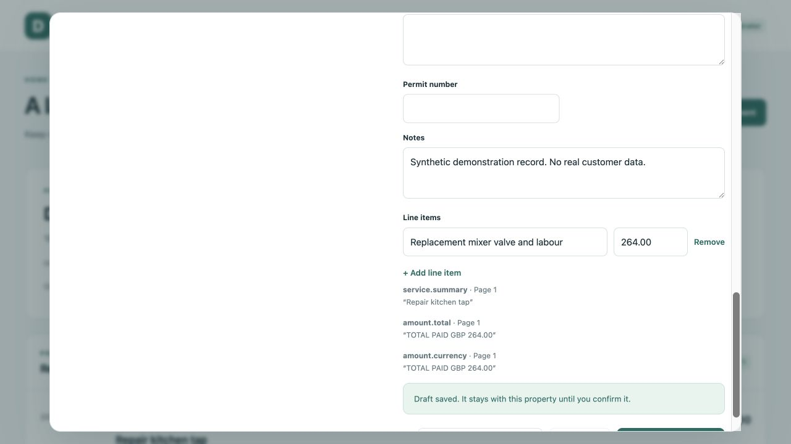
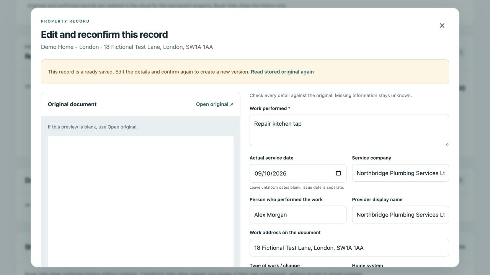
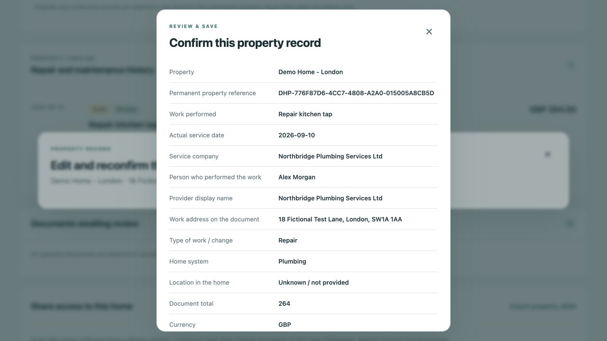
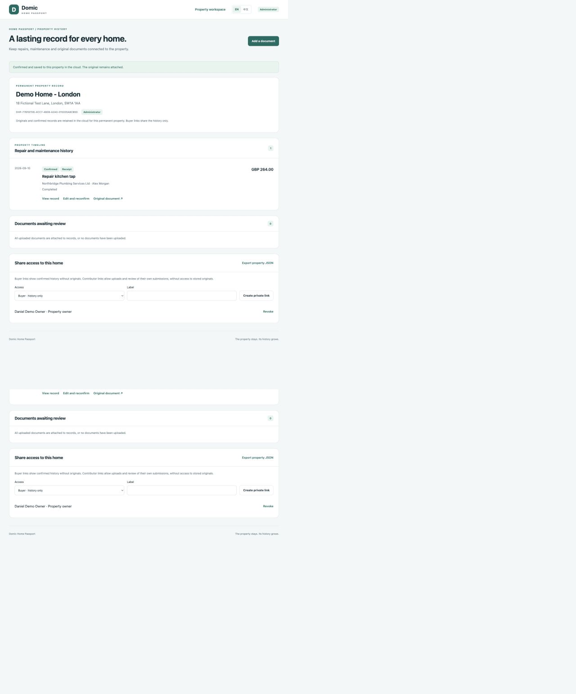
Recovery behaviour
In each case, the original has already been stored. No confirmed maintenance record is created until a person supplies or approves usable facts.
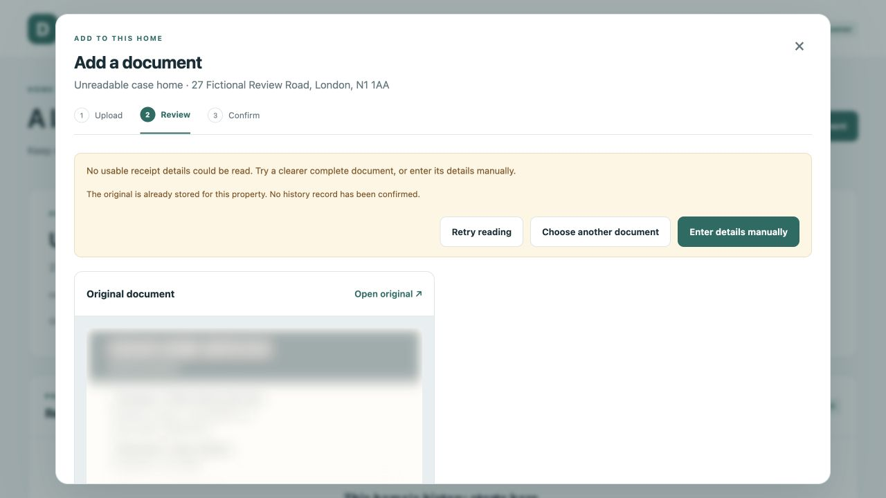
The interface says that no usable receipt details were found and does not pretend an extraction succeeded.
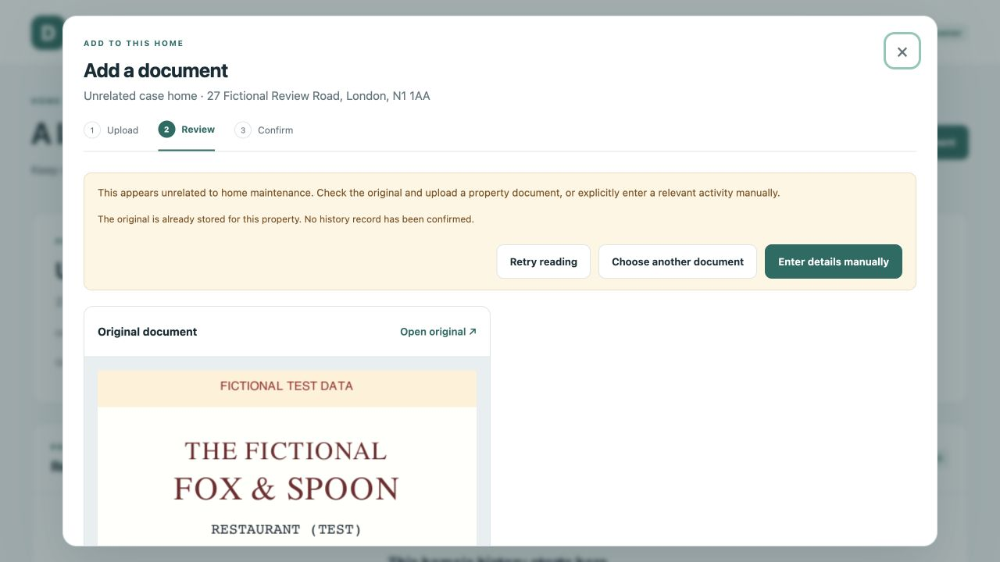
The system identifies that the file does not appear to describe home maintenance and stops before creating a record.
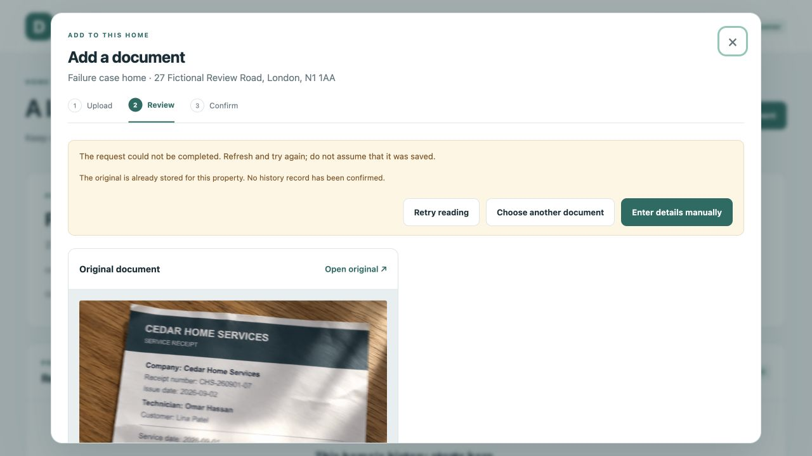
A technical failure shows a persistent error. The stored original can be retried later without being mistaken for a confirmed record.
Fixed output contract
Receipts vary widely, so the schema stays stable while values may be absent. Evidence and the original support review; human confirmation decides whether the proposal becomes history.
| Group | Fields shown for review | Why it matters |
|---|---|---|
| Property identity | property.id · property.uid · address | Keeps every original and record attached to the correct home. |
| Document | type · reference number · issue date · original | Describes the evidence and preserves the source for later comparison. |
| Work performed | service date · category · change type · summary · location · completion status | Records what changed, where, when and whether it was completed. |
| Provider | company · person · phone · office address | Identifies the company or individual responsible for the work. |
| Cost | total · currency · payment status · line items | Supports cost history without inventing missing payment facts. |
| Asset and cover | make/model · serial number · warranty · permit number | Helps future repairs, warranty claims and due diligence. |
| Review trail | source quotes · page · notes · draft/confirmed · version | Shows the basis for a value and preserves later corrections. |
An absent value is never replaced with a guess, a zero or a misleading placeholder.
Reader output remains editable until a user deliberately confirms the summary.
The stored file and structured record keep separate identities linked to the same property.
Roles and storage
Receipt photos and PDFs are retained in private R2 storage. They are not embedded in this public review page or the public TimeMemo repository.
Properties, documents, confirmed records, versions, access grants and audit events remain separate database entities with explicit links.
| Role | Can see | Can do |
|---|---|---|
| Administrator | All properties, records, originals and audit activity | Create homes, issue links, configure the reader and inspect submissions |
| Owner | Own property history and its originals | Upload, review, confirm, edit and share authorised views |
| Contributor | Property context and their own submissions | Upload and complete authorised work |
| Buyer | Confirmed property history | Read the due-diligence view; no original-file access |
Current engineering status
These are known review findings, so this release is described as a protected partner preview rather than an open public beta.